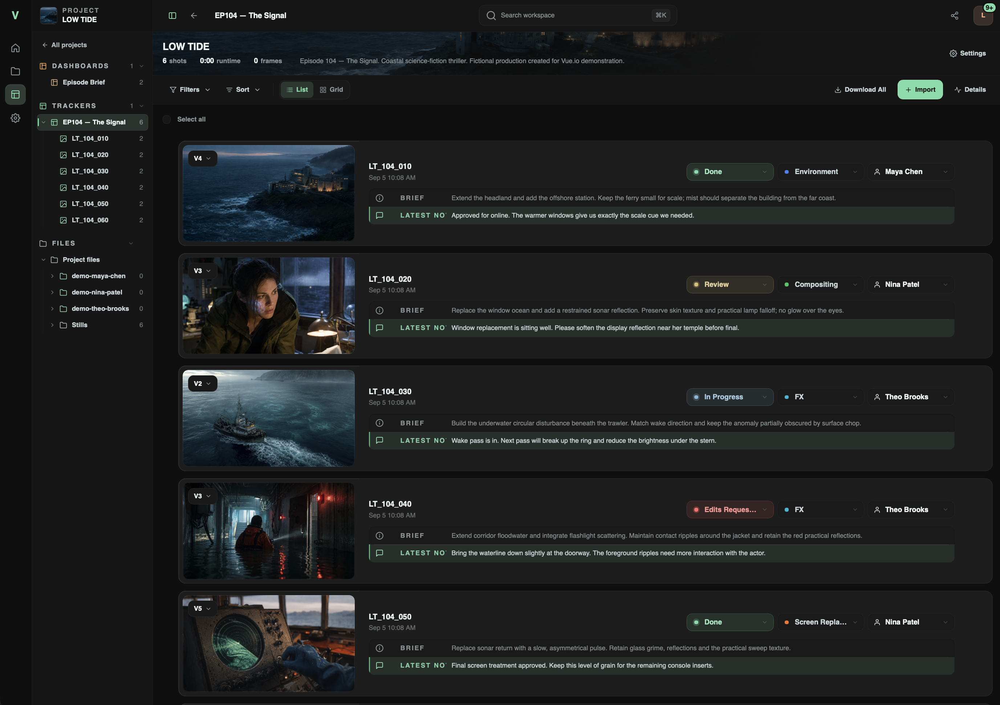

Review and version history
Use a tracker to organize shots. Keep each shot's revisions in its version list. Use comments for review feedback. Use the brief to describe the required work.

The example project uses synthetic media and fictional team profiles.
Create a project and tracker
Use an administrator account for this first workflow. Project owners can also create trackers if their account permits project management.
- Open Projects.
- Select New project.
- Enter a title.
- Select an existing Working project folder, or create a new folder in the picker.
- Select Create.
- In the project, select New → Vue Tracker.
- Enter a tracker name.
- Select Create.
The tracker opens inside the project. It does not move or copy existing media by itself. For team permissions and project dashboards, see Workspace and team.
Add the first shots
The tracker imports files that the host can access. It cannot read a disk attached only to your reviewing computer.
- If the files are on your reviewing computer, select New → Upload Files in the project.
- Select Choose files or Choose folder.
- Wait until the upload list shows Done.
- Open the tracker.
- Select Import → Add Shots.
- Browse Project Files. Users with file-browser access can also browse Storage.
- Select the media files.
- Use the import button at the bottom of the picker.
Import all beside a folder imports its compatible files. Start with selected files if the folder contains unrelated material. Confirm the resulting shot names and media before continuing. An imported shot can appear before its preview is ready.
Add a version to an existing shot
- Upload the revision to the project, or place it in an authorized media location.
- Open the shot's version menu.
- Select Add version.
- Confirm the Current shot shown in the picker.
- Select the revision file.
- Add version notes if needed.
- Select Add Version.
The file becomes another version of that shot. Select an earlier version to review it again. For several shots, use Import → Bulk Update. Select a file for the current shot, then select Add & Next. Check the target shot at each step; this is not automatic filename matching.
This is media version history, not source-code version control. Vue.io does not merge edits or replace versioning in your creative application. Keep a separate source file for each revision. Overwriting that file does not preserve its old contents.
Organize shots
Use the tracker controls to change status, tags, and assignees when your permissions allow it. A shot can have more than one assignee. Use List or Grid, then sort, group, or filter the shots. Filters include status, tag, and assignee. Publication filters appear for users who can manage publication.
Select several shots to change their status, tag, or assignments together. The selection bar also provides download and archive actions when permitted. Check the selection count before a bulk action.
Archive removes a shot from the active view. The archived view provides Restore. Delete permanently removes the archived shot's versions, comments, and comment attachments. Source media files stay in the project. This action is different from deleting a file.
Write comments and annotations
- Open the required shot version or file.
- For video, pause at the relevant time. For a PDF, select the relevant page.
- Enter the review comment.
- To mark an area, select Add Drawing and complete the drawing.
- Submit the comment.
- Confirm that the comment appears against the intended media and time or page.
Reply to a comment to keep its discussion together.
Comments can include uploaded attachments and references to existing project content.
Type @ and select a search result to insert an available person or content reference.
Typing plain text alone does not create a linked reference.
Recipients still need permission to open referenced content.
Use Record voice note to record audio if the browser supports recording. Allow microphone access when the browser asks. Stop the recording, then submit the comment. Voice notes have a five-minute limit. Vue.io processes English transcription locally with its bundled model. Review the transcript for errors; it is not a verified record of the spoken words.
Control which versions appear in shares
Open the tracker Settings. Enable Approve versions before sharing before adding revisions that need internal approval. This changes the initial visibility of new versions. It does not publish or hide existing versions.
| Version state | Effect |
|---|---|
| Awaiting publication | A new version awaits a publication decision. Share visitors cannot see it. |
| Internal | The version is not published to shares. Authorized team users can still review it. |
| Published | The version is available through an applicable share, subject to that share's access rules. |
A project owner or administrator uses the version menu to publish or unpublish a version. Publish to Review publishes the latest version. For active shots in Not Started, In Progress, or Edits Requested, this also changes the status to Review. Publishing an older version does not make that status change. Other statuses and archived shots are not automatically changed.
Publishing a newer version makes older awaiting versions internal. It does not remove older published versions. Republishing an older version can make it the current version shown to share visitors. Check the link as a signed-out visitor after changing publication.
When approval is off, new versions normally publish when added. Unavailable media cannot be published. A status change alone does not publish a held version. Publication is not a separate copy of the file or an immutable delivery package.
Media preview support
The viewer has video, image, PDF, and 3D model views. Video controls include playback, seeking, volume, looping, quality selection, and fullscreen. Available quality choices depend on the media and its previews. Other files can still be stored and downloaded when permitted. Recognized filename extensions do not guarantee a working preview. Playback depends on the actual codec, generated previews, browser support, and available storage. For camera formats such as R3D or BRAW, test a representative file before relying on preview support.
Review a 3D model
Open a supported model from Files, a project, a tracker version, or a share. Drag to orbit. Use the scroll wheel or a pinch gesture to zoom. Select Fit to reset the view. Open Lighting to choose Studio, Daylight, or Night. Adjust the light intensity and rotation there. These environments are generated locally. They need no external image service.
| Format | Preview support |
|---|---|
| GLB / glTF 2.0 | Materials, textures, skeletal animation, and morph animation. GLB is the recommended review format. Draco, Meshopt, and KTX2 compression are supported. |
| FBX | Meshes, embedded textures, and supported skeletal or morph animation. Export external textures inside the FBX, or use GLB. |
| OBJ | Static meshes and one MTL material library. Place the MTL and its textures beside the model or in a subfolder. Texture-map options are not supported. |
| STL | Static geometry with neutral lighting. |
| Alembic (.abc) | Ogawa polygon meshes with animated transforms, deformation, or changing topology. The preview uses a neutral material. HDF5 archives, curves, points, volumes, and subdivision surfaces need conversion to polygon meshes first. |
For glTF, upload its referenced buffers and textures with the file. Keep their relative paths. Companion files must stay inside the model folder. Parent paths, symlinks, and remote URLs are blocked. A model share can serve the files declared by the model, subject to these limits. It does not expose a folder listing.
Animated models show playback controls and a frame slider. Select the animation clip when a file contains several clips. Alembic uses the source frame rate when available. Other animations use a 30 fps review timeline. Static models have no timeline or comment timecode.
To leave a note, choose the view and frame, then post the comment. Vue.io saves the camera and lighting with the note. Select Add Drawing to mark the view. The camera and frame stay fixed while you draw. Select a posted note to restore its view, lighting, animation clip, and frame. A saved drawing keeps its proportions on other screen sizes. Select Return to orbit to leave that view. The drawing is a screen overlay for the saved view. It is not attached to the model surface.
GLB, glTF, FBX, OBJ, and STL load directly in the browser. Their combined files must be at most 128 MiB, with at most two million triangles. Use textures no larger than 8,192 pixels per side, with at most 64 million pixels in total. The viewer renders static models only when the view changes. Animation stops when the browser tab is hidden.
The engine prepares Alembic frames once and reuses its normal preview cache.
The first frame opens while the remaining frames are prepared. The browser keeps only a few nearby frames in memory.
Alembic files must be at most 2 GiB, with at most 2,400 frames and 250,000 triangles per frame.
Processing has a five-minute time limit and a 512 MiB cache limit per model.
Large simulation caches may need a smaller review export. Vue.io does not change the original file.
The engine image includes the Alembic decoder; a source installation needs the vueio-model-preview binary on its PATH.
3D review requires WebGL 2. Preview speed depends on model size, device graphics, and network speed. Materials can differ from an offline renderer. Baked simulations in FBX or glTF must use animation those formats support. 3D models do not use video LUTs, frame downloads, or the two-version comparison view.
Compare two revisions
- Open a shot with at least two available versions.
- Open Compare in the viewer.
- Select the versions in A and B.
- Select Side by side or Wipe.
- In Wipe, drag the divider to compare the images.
- Select Done to return to the normal viewer.
Choose two videos or two images from the same shot. Mixed media pairs, PDFs, and 3D models are not supported by this comparison view. Playback depends on available source files and previews. Do not assume frame-accurate synchronization for different frame rates or durations.
If the control is missing, check Settings → Comparison for that tracker. The owner can disable it or limit it to administrators, team members, or team members and share visitors.
Use a color preview or capture a frame
Open Color preview in the image or video viewer.
Select a saved lookup table (LUT), or select Load temporary LUT for a local .cube file.
Select Source to remove the preview look.
Administrators manage saved LUTs in Settings → Preview LUTs.
LUTs change the viewer and captured video frames. They do not change source files or source-file downloads. The frame menu provides Copy frame, Download frame, and thumbnail controls when available. Check its annotation option before capture. Browser clipboard permissions can prevent copying. Thumbnail changes require a permitted signed-in user. The source-download setting does not disable frame capture in this release.
A temporary LUT stays in browser memory until the page closes or refreshes. For animated images, LUT mode shows one frame. Select Source to see the animation. Choose a LUT that matches the source encoding. Browser preview is not calibrated color finishing.
Supported LUT files and library limits
Inspect activity or restore tracker History
Open the tracker's Details panel to inspect progress and activity. Select History to inspect recorded changes. The tracker settings control who can see Details.
A project owner or administrator with project-management access can select Restore beside an available saved point. The project must be writable and Details must be enabled. Read the preview before confirming: it returns the whole tracker to the state after that event. It can change shots, versions, assignments, and comments, including changes made after that point. It is not a single-field undo and does not restore the entire workspace.
Not every event has a usable saved point. Older, oversized, or unavailable records can lack one. History does not recover missing source-media bytes. Keep database and file backups independently. Do not restore History during another person's active edits without coordinating the change.
Deliver the selected work
Confirm version publication and filenames before sending a link. Tracker downloads use the latest available version for each included shot, not every revision. Filters and selection can change which shots an internal tracker download includes.